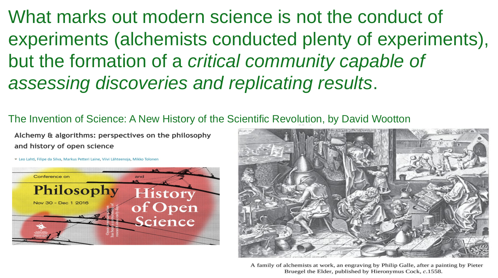
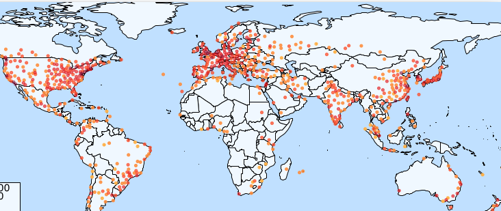
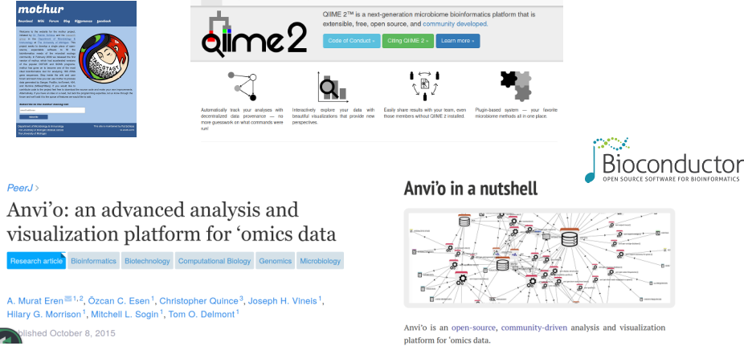

# Take the screenshot and save to a temporary filetmpfile <-tempfile(fileext =".png")temp <-webshot(url ="https://eurobioc2026.bioconductor.org/",file = tmpfile)
Project for developing software in bioinformatics.
Over 1.5 million distinct IPs per year are downloading.
50,000+ citations in PubMed
Collaborative development

Alchemists tried to do gold from inexpensive materials (iron, urine) in middle ages and before and after that
They did lots of studies which of course failed. But instead of criticizing the theory, they were blaming the laboratory equipment.
Also, if experiments seemed to be working, they did not replicate the results.
Closed communities without critisism.
Chemistry as a field of science was formed when they started to form communities that criticized the theories which led to advancements
Same goes with bioinformatics. That is why communities and open science are very important.
Open source code, publishing code and data.
Science is a community effort: quality & impact
Collaborative development
Software & data repository
Tutorials & documentation
Community support & events

Bioconductor is based on collaborative developments
Everyone can contribute. Open access.
Documentation helps to replicate results and critically assess the methods
Community building is important in building community that can assess discoveries
Conferences in North America, Asia and Europe
Open (microbiome) data science ecosystems

Several microbiome data cience community exist
They differ from their scope and community, but they are also overlapping
QIIME2 you can do the upstream and downstream analysis, but Bioconductor aces in statistical analysis.
Bioconductor emphasizes interoperability across ecosystems. You can utilize QIIME2 in taxonomy mapping and Bioconductor in statistical analysis. From ecosystem to ecosystem, from R to Python.
All these ecosystems have own pros and cons, and you should be aware that they exist.
Bioconductor software
~2,300 R packages
Review, testing, documentation
# Get packages and info based on their BiocViewspkgs <- BiocPkgTools::biocPkgList()#pkgs[["SE"]] <-sapply(pkgs$Depends, function(x) any(grepl("summarizedexperiment", x, ignore.case =TRUE)) )fields <-sapply(pkgs$biocViews, function(x){ field <-"Other"if( any(grepl("genomic|genetic|gene|genom|DNA", x, ignore.case =TRUE)) ){ field <-"Genomics" }if( any(grepl("proteomics|protein", x, ignore.case =TRUE)) ){ field <-"Proteomics" }if( any(grepl("metabolomics|metabolome|metabolite|Lipidom|massspectro", x, ignore.case =TRUE)) ){ field <-"Metabolomics" }if( any(grepl("transcripto|RNA-seq|RNA", x, ignore.case =TRUE)) ){ field <-"Transcriptomics" }if( any(grepl("immuno", x, ignore.case =TRUE)) ){ field <-"Immunology" }if( any(grepl("cytom", x, ignore.case =TRUE)) ){ field <-"Cytometrics" }if( any(grepl("microarray|chip", x, ignore.case =TRUE)) ){ field <-"Microarray" }if( any(grepl("single-cell|singlecell", x, ignore.case =TRUE)) ){ field <-"Single-cell" }if( any(grepl("metagenom|microbiome|16S|microbiota|amplicon|shotgun|microb|metatranscript|metametabolo|metaproteo", x, ignore.case =TRUE)) ){ field <-"Microbiome" }return(field)})pkgs[["Field"]] <- fieldspkgs[pkgs[["Package"]] %in%c("mia", "miaViz", "miaSim", "iSEEtree", "HoloFoodR", "MGnifyR"), "Field"] <-"Microbiome"# Get download stats df <- BiocPkgTools::biocDownloadStats()# Subset to include only packages which BiocView we havedf <- df[df$Package %in% pkgs$Package, ]# submitted <- BiocPkgTools::firstInBioc(df)# df <- df[df$Package %in% pkgs$Package, ] # Take into account only current packagespkgs <- pkgs[, c("Package", "SE", "Field")]# Get table that shows which package is available in each datedates <- df$Date |>unique()dates <- dates[ dates < lubridate::floor_date(Sys.time(), "month") ]available <-lapply(dates, function(date){ temp <- df[df[["Date"]] == date, ] temp <- temp[match(unique(df$Package), temp$Package), ] temp <- temp[["Nb_of_distinct_IPs"]] >0| temp[["Nb_of_downloads"]] >0 temp[is.na(temp)] <-FALSE temp <-as.numeric(temp)return(temp)})available <-do.call(cbind, available) |>as.data.frame()rownames(available) <-unique(df$Package)colnames(available) <- dates#ind <- pkgs[match(unique(df$Package), pkgs$Package), "Field"][[1]]pkgs_date <-rowsum(available, group = ind)# Put into long formatlibrary(tidyverse)
── Attaching core tidyverse packages ──────────────────────── tidyverse 2.0.0 ──
✔ dplyr 1.2.0 ✔ readr 2.1.5
✔ forcats 1.0.1 ✔ stringr 1.5.2
✔ lubridate 1.9.4 ✔ tibble 3.3.0
✔ purrr 1.2.1 ✔ tidyr 1.3.1
── Conflicts ────────────────────────────────────────── tidyverse_conflicts() ──
✖ dplyr::filter() masks stats::filter()
✖ dplyr::lag() masks stats::lag()
ℹ Use the conflicted package (<http://conflicted.r-lib.org/>) to force all conflicts to become errors
pkgs_date <- pkgs_date %>%rownames_to_column("Field") %>%pivot_longer(cols =colnames(pkgs_date)[ !colnames(pkgs_date) %in%c("Field")], names_to ="Date",values_to ="N" )pkgs_date[["Date"]] <-as.Date(pkgs_date[["Date"]])# Create a plot that shows number of package through datep1 <-ggplot(pkgs_date, aes(x = Date, y = N, fill = Field)) +geom_area() +theme_classic() +scale_fill_brewer(palette ="Paired") +labs(x ="Year", y ="Number of packages") +scale_x_date(expand =c(0, 0),limits =c(min(pkgs_date[["Date"]]), max(pkgs_date[["Date"]])) ) +scale_y_continuous(expand =c(0, 0)) +theme_classic(base_size =18)
library(BiocPkgTools)
Loading required package: htmlwidgets
library(ggplot2)library(scales)
Attaching package: 'scales'
The following object is masked from 'package:purrr':
discard
The following object is masked from 'package:readr':
col_factor
Warning: Removed 2 rows containing missing values or values outside the scale range
(`geom_col()`).
Popularity has grown.
Broad range of fields (microbiome is rather small, but steadily raising ~ 50 packages)
Over 2,300 R packages
Not limited to R, but R has been the main language. Activity in Python and Julia.
Special abut Bioconductor is the rather strict requirements which ensure the high-quality.
Review process when submitting (novel, relevant, works as it should be, documentation is sufficient) Testing is done automatically (daily). Software must be accessible. –> documentation must be good
Bioconductor ecosystems
library(ggplot2)library(ggrepel)# Timeline datatimeline_data <-data.frame(year =c(2012, 2015, 2017, 2019),event =c("phyloseq\nMcMurdie and Holmes, 2013","SummarizedExperiment\nHuber et al., 2015","SingleCellExperiment\nAmezquita et al., 2020", "TreeSummarizedExperiment\nHuang et al., 2021" ))# Create a single polygon for the entire arrow (rectangle + arrowhead)arrow_data <-data.frame(x =c(2021, 2024.5, 2024.5, 2025, 2024.5, 2024.5, 2021),y =c(-0.14, -0.14, -0.16, -0.10, -0.04, -0.06, -0.06))ggplot(timeline_data, aes(x = year, y =0)) +# Base timelineannotate("segment", x =2011, xend =2025, y =0, yend =0,arrow =arrow(length =unit(0.4, "cm"), type ="closed"),linewidth =1.5, color ="gray40" ) +# Timeline points and segmentsgeom_point(size =5, color ="#2C3E50") +# Repelled labelsgeom_label_repel(aes(label = event),direction ="y",nudge_y =0.02,box.padding =0.4,point.padding =0.5,size =5,fontface ="bold",color ="#34495E",segment.color ="gray60" ) +# mia: draw arrow-box from 2021 to 2025geom_polygon(data = arrow_data,mapping =aes(x = x, y = y),fill ="white", color ="black", linewidth =0.8 ) +annotate("text", x =2022.75, y =-0.10,label ="OMA\n(Borman et al., 2025)",size =5, fontface ="bold", color ="black", lineheight =1.1 ) +# Final themingscale_x_continuous(breaks =c(timeline_data$year, 2021, 2025),limits =c(2010, 2025) ) +scale_y_continuous(limits =c(-0.25, 0.3)) +theme_minimal(base_size =15) +theme(axis.title =element_blank(),axis.text.y =element_blank(),axis.text.x =element_text(size =16),axis.ticks =element_blank(),panel.grid =element_blank(),legend.position ="none",plot.title =element_text(face ="bold", size =16, hjust =0.5) )
Over the years, several approaches to data organization have been developed. One of the first widely adopted data containers in microbiome research was phyloseq(McMurdie and Holmes 2013), designed for 16S amplicon sequencing data. However, it has limitations, particularly in linking multiple experiments and ensuring interoperability between tools in Bioconductor.
Tightly linked with broader Bioconductor ecosystem
Improved scalability
Improved multi-table integration
We use same data format as broader Bioconductor ecosystem. Some of you might know phyloseq. That was specifically designed for 16S amplicon data, and is not supported outside its ecosystem. Moreover, microbiome data science is nowadays more than sequencing data, it links different fields from metabolomics to genomics. Same data format allows us to use methods from different fields.
The ecosystem is more scalable; speed and memory wise than phyloseq and its more efficient alternative, speedyseq. It is not uncommon anymore that there are tens of thousands of samples and features so we need efficient software to run these big datasets.
This ecosystem allows us to link multiple tables together, facilitating multi-omics integration by supporting management of this kind of complex datasets.
Ecosystem of packages developed by the community. mia provides the basic operations in microbiome data analysis. miaViz has the methods for visualization.
Developed by independent developers who have started to support the ecosystem.
Orchestrating Microbiome Analysis with Bioconductor
Resources and tutorials for microbiome analysis
Community-built best practices
Open to contributions!
Go to the Orchestrating Microbiome Analysis (OMA) online book
To support users and to collect best practices, there is online book available.
Take home message
Community is the key
Data containers
Data containers
The core of software
Structured, standardized way to manage complex data
Enables modular, efficient workflows
# Load librarieslibrary(ggplot2)library(ggforce)# Adjusting the text positions for better alignmentellipse_data <-data.frame(x =c(0, 0, 0), # Centers of ellipsesy =c(2, 1, 0), # Centers of ellipsesa =c(4, 3, 2), # Widths of ellipsesb =c(3, 2, 1), # Heights of ellipseslabel =c("COMMUNITY", "METHODS", "DATA CONTAINER"), # Labels for each ellipselabel_y =c(4, 1.75, 0) # Adjusted vertical positions for labels)# Plot with adjusted labelsggplot() +geom_ellipse(data = ellipse_data, aes(x0 = x, y0 = y, a = a, b = b, angle =0),color ="darkgreen", fill ="grey90", alpha =0.7) +geom_text(data = ellipse_data, aes(x = x, y = label_y, label = label), size =5, fontface ="bold") +coord_fixed() +theme_void()
The core of software is formed by data containers.
Structured way to present complex data. Interlinks tables and data types.
In biology, usually we have abundance table, sample metadata, taxonomy table, phylogeny, …
Managing this complex data set becomes a burden and lead easily to errors.
library(magick)img1 <-image_read("images/pile_of_papers.png")img2 <-image_read("images/book.png")arrow <-image_blank(width =500, height =1000, color ="none") %>%image_annotate("→", size =200, gravity ="center", color ="black")# Combine images with the arrowfinal_image <-image_append(c(img1, arrow, img2), stack =FALSE)# Display the final imagefinal_image
Imagine pile of paper sheets that are unordered. Then imagine a book that holds these same pages in structured way. Would you rather read 100 pages from pile of mess or from book?
library(magick)img1 <-image_read("images/unorganized_data.png")img2 <-image_read("images/TreeSE.png")img2 <-image_scale(img2, "125%")arrow <-image_blank(width =500, height =1000, color ="none") |>image_annotate("→", size =200, gravity ="center", color ="black")# Combine images with the arrowfinal_image <-image_append(c(img1, arrow, img2), stack =FALSE)# Display the final imagefinal_image
The same idea goes with the data containers. Instead of managing tables separately you can put them to this data container.
Optimal container for microbiome data?
Optimal container for microbiome data?
Multiple assays: seamless interlinking
Original assay and transformations, along with different experiments
Optimal container for microbiome data?
Multiple assays: seamless interlinking
Hierarchical data: supporting samples & features
Phylogeny and sample hierarchy (patients are relatives, or sampling places can be structured hierarchically etc)
Optimal container for microbiome data?
Multiple assays: seamless interlinking
Hierarchical data: supporting samples & features
Side information: extended capabilities & data types
Sample metadata, taxonomy table…
Optimal container for microbiome data?
Multiple assays: seamless interlinking
Hierarchical data: supporting samples & features
Side information: extended capabilities & data types
Optimized: for speed & memory
Datasets have increased in size. Both sample-wise and feature-wise (more resolution).
Optimal container for microbiome data?
Multiple assays: seamless interlinking
Hierarchical data: supporting samples & features
Side information: extended capabilities & data types
Optimized: for speed & memory
Integrated: with other applications & frameworks
Not anymore just sequencing data, but microbiome is combining different fields –> we have to have way to apply these methods from different fields.
Advancing bioinformatics in collaboration with other fields.
Innovations (applicable methods from other field)
Bioconductor aims to harmonize the data format so that the same format can be used through the ecosystem.
In biological data science, we apply similar techniques despite the field.
Bioconductor version '3.22' is out-of-date; the current release version '3.23'
is available with R version '4.6'; see https://bioconductor.org/install
pkgs <-c("BiocPkgTools", "lubridate", "tidyverse")temp <-sapply(pkgs, function(pkg){if( !require(pkg, character.only =TRUE) ){ BiocManager::install(pkg)library(pkg, character.only =TRUE) }})# Get packages and info based on their BiocViewspkgs <-biocPkgList()#pkgs[["SE"]] <-sapply(pkgs[["Depends"]], function(x) any(grepl("summarizedexperiment", x, ignore.case =TRUE)) )pkgs <- pkgs[pkgs[["SE"]], ]fields <-sapply(pkgs$biocViews, function(x){ field <-"Other"if( any(grepl("genomic|genetic|gene|genom|DNA", x, ignore.case =TRUE)) ){ field <-"Genomics" }if( any(grepl("proteomics|protein", x, ignore.case =TRUE)) ){ field <-"Proteomics" }if( any(grepl("metabolomics|metabolome|metabolite|Lipidom|massspectro", x, ignore.case =TRUE)) ){ field <-"Metabolomics" }if( any(grepl("transcripto|RNA-seq|RNA", x, ignore.case =TRUE)) ){ field <-"Transcriptomics" }if( any(grepl("immuno", x, ignore.case =TRUE)) ){ field <-"Immunology" }if( any(grepl("cytom", x, ignore.case =TRUE)) ){ field <-"Cytometrics" }if( any(grepl("microarray|chip", x, ignore.case =TRUE)) ){ field <-"Microarray" }if( any(grepl("single-cell|singlecell", x, ignore.case =TRUE)) ){ field <-"Single-cell" }if( any(grepl("metagenom|microbiome|16S|microbiota|amplicon|shotgun|microb|metatranscript|metametabolo|metaproteo", x, ignore.case =TRUE)) ){ field <-"Microbiome" }return(field)})pkgs[["Field"]] <- fieldspkgs[pkgs[["Package"]] %in%c("mia", "miaViz", "miaSim", "iSEEtree", "HoloFoodR", "MGnifyR"), "Field"] <-"Microbiome"# Get download stats df <-biocDownloadStats()# Subset to include only packages which BiocView we havedf <- df[df[["Package"]] %in% pkgs$Package, ]# Add field infodf[["Field"]] <- pkgs[match(df[["Package"]], pkgs[["Package"]]), "Field"][[1]]# df <- df[df$Package %in% pkgs$Package, ] # Take into account only current packagespkgs <- pkgs[, c("Package", "SE", "Field")]# Get table that shows which package is available in each datedates <- df$Date |>unique()dates <- dates[ dates <floor_date(Sys.time(), "month") ]available <-lapply(dates, function(date){ temp <- df[df[["Date"]] == date, ] temp <- temp[match(unique(df$Package), temp$Package), ] temp <- temp[["Nb_of_distinct_IPs"]] >0| temp[["Nb_of_downloads"]] >0 temp[is.na(temp)] <-FALSE temp <-as.numeric(temp)return(temp)})available <-do.call(cbind, available) |>as.data.frame()rownames(available) <-unique(df[["Package"]])colnames(available) <- dates#ind <- pkgs[match(unique(df[["Package"]]), pkgs[["Package"]]), "Field"][[1]]pkgs_date <-rowsum(available, group = ind)# Put into long formatpkgs_date <- pkgs_date |>rownames_to_column("Field") |>pivot_longer(cols =colnames(pkgs_date)[ !colnames(pkgs_date) %in%c("Field")], names_to ="Date",values_to ="N" )pkgs_date[["Date"]] <- pkgs_date[["Date"]] |>as.Date()# Create a plot that shows number of package through datep <-ggplot(pkgs_date, aes(x = Date, y = N, fill = Field)) +geom_area() +theme_classic(base_size =18) +scale_fill_brewer(palette ="Paired") +labs(x ="Year", y ="Number of packages") +scale_y_continuous(expand =c(0, 0), limits =c(0, NA)) +scale_x_date(limits =c(as.Date("2015-01-01"), max(pkgs_date[["Date"]])) )p
Warning: Removed 648 rows containing non-finite outside the scale range
(`stat_align()`).
The same data container is used in different fields. So to analyse multi-omics data, you need to know only one data container.
Take home messages
Community is the key
(Tree)SummarizedExperiment is a structured way to handle complex (biological) data
References
Amezquita, Robert A, Aaron T L Lun, Etienne Becht, Vince J Carey, Lindsay N Carpp, Ludwig Geistlinger, Federico Marini, et al. 2020. “Orchestrating Single-Cell Analysis with Bioconductor.”Nature Methods 17 (2): 137–45. https://doi.org/10.1038/s41592-019-0654-x.
Huang, Ruizhu, Charlotte Soneson, Felix G. M. Ernst, et al. 2021. “TreeSummarizedExperiment: A S4 Class for Data with Hierarchical Structure.”F1000Research 9: 1246. https://doi.org/10.12688/f1000research.26669.2.
Huber, W., V. J. Carey, R. Gentleman, S. Anders, M. Carlson, B. S. Carvalho, H. C. Bravo, et al. 2015. “Orchestrating High-Throughput Genomic Analysis with Bioconductor.”Nature Methods 12 (2): 115–21. http://www.nature.com/nmeth/journal/v12/n2/full/nmeth.3252.html.
McMurdie, PJ, and S Holmes. 2013. “Phyloseq: An r Package for Reproducible Interactive Analysis and Graphics of Microbiome Census Data.”PLoS ONE 8: e61217. https://doi.org/10.1371/journal.pone.0061217.